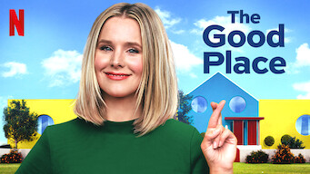

The Good Place

Criador: Michael Schur
Autores: Michael Schur, Demi Adejuyigbe, Joe Mande, MAIS
Emissora original: NBC
Episódio final: 30 de janeiro de 2020
Gênero: Comédia
2020 - 4 temporadas HD
14 Anos: Conteúdo sexual
História:
The Good Place é uma série de TV americana transmitida originalmente pelo canal NBC. A história acompanha Eleanor Shellstrop, uma mulher que descobre que mesmo na vida após a morte, nunca é tarde para mudar seus hábitos. Eleanor chegou no Good Place, mas não demora muito para perceber que está lá por engano.
Criador: Michael Schur
Autores: Michael Schur, Demi Adejuyigbe, Joe Mande, MAIS
Emissora original: NBC
Episódio final: 30 de janeiro de 2020
Gênero: Comédia